Impulsi Interlagos
O Impulsi Interlagos nasce da necessidade de criar algo que não apenas ocupe o espaço, mas que pulse com ele. Desenvolvido pelo Estúdio Térri, é o resultado de uma busca incessante pelo equilíbrio entre rigor técnico e fluidez estética.
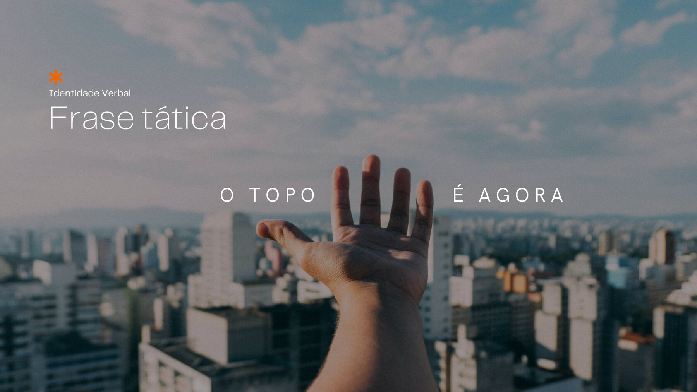
Estratégia
Definição do posicionamento da marca.
A marca se posiciona como a materialização de quem investe pensando no hoje e constrói para o futuro — unindo rentabilidade inteligente e lifestyle urbano sob o arquétipo do protagonismo.
Naming
Extensão estratégica da marca-mãe Impulsi.
“Interlagos” atua como extensão da marca Impulsi, destacando a localização premium e posicionando o produto dentro da rede. A assinatura “Powered by Housi” é preservada, reforçando o modelo de gestão inteligente.
ID Verbal
Criação das características narrativas.
Um tom aspiracional e atemporal, sintetizado na frase tática “O topo é agora” e no manifesto “Futuro no topo” — protagonismo, visão e conquista.
ID Visual
Desenvolvimento do logo e universo visual.
O impulso representado no “M” ganha uma nova camada de significado: a chegada ao topo. O universo visual fluido e o gradiente do teal ao magenta traduzem movimento e energia.
BX
Gestão contínua da experiência de marca.
A identidade se materializa em pontos de contato tangíveis — da coleção de vestuário às aplicações de marca —, garantindo consistência e presença em cada experiência.
Sobre a marca
Investir no hoje, construir o futuro
O Impulsi Interlagos é a materialização de quem investe pensando no hoje — e construindo para o futuro. Sua identidade visual traduz essa visão: estar no topo não é apenas conquistar um espaço, é deixar um legado. Mais do que um endereço desejado, é a união entre rentabilidade inteligente e lifestyle urbano. Aqui, a visão de futuro é concreta, aspiracional e, acima de tudo, atemporal.
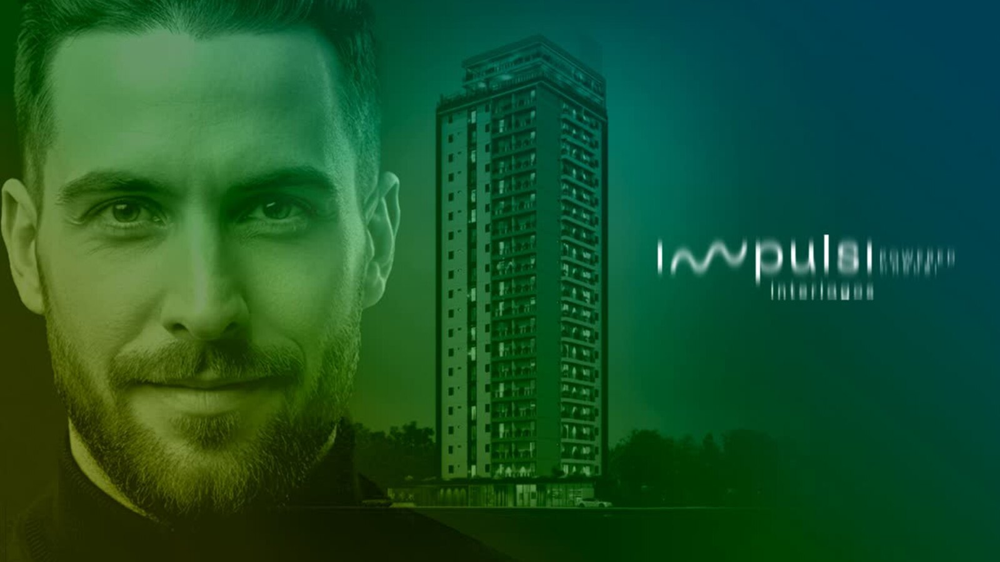
Pulsar com o espaço
Mais do que ocupar um lugar, a marca foi criada para pulsar com ele. O conceito nasce do equilíbrio entre rigor técnico e fluidez estética — uma identidade que traduz movimento, energia e protagonismo, à altura de um produto que se propõe a ser referência.
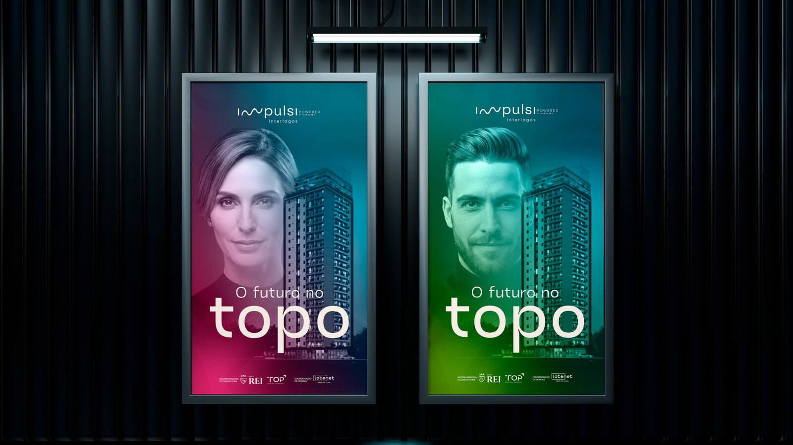
O topo é agora
A narrativa verbal traduz a ambição da marca em frases táticas diretas e aspiracionais. “O topo é agora” e “Futuro no topo” sintetizam um tom de voz de protagonismo e visão — atemporal, confiante e construído para durar.
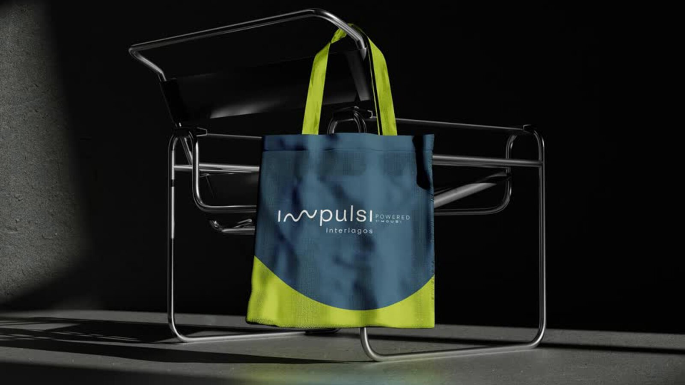
O impulso que chega ao topo
No símbolo, o impulso representado no “M” ganha uma nova camada de significado: a chegada ao topo. O universo visual fluido e o gradiente que vai do teal ao magenta dão à marca um movimento próprio, mantendo a continuidade com a marca-mãe Impulsi.
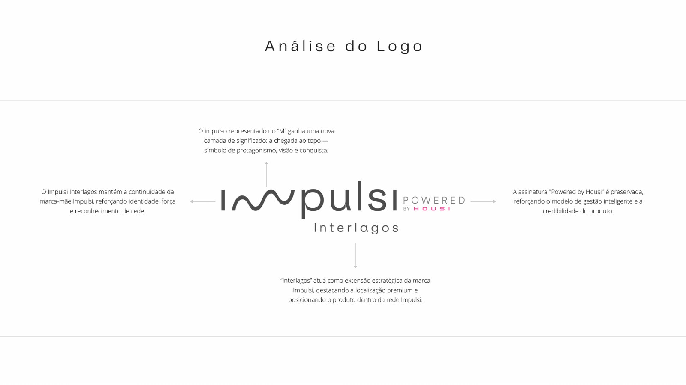
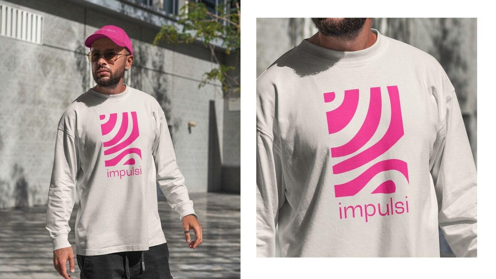
Ficha técnica
Brand experience
A coleção
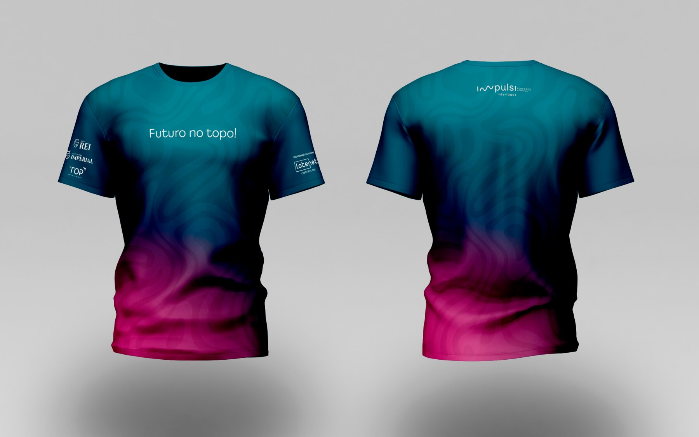
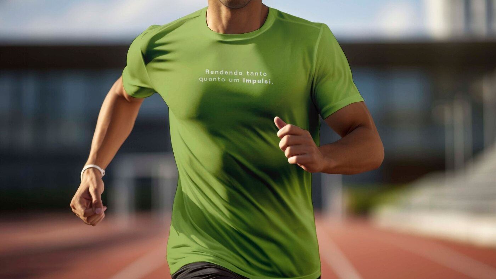
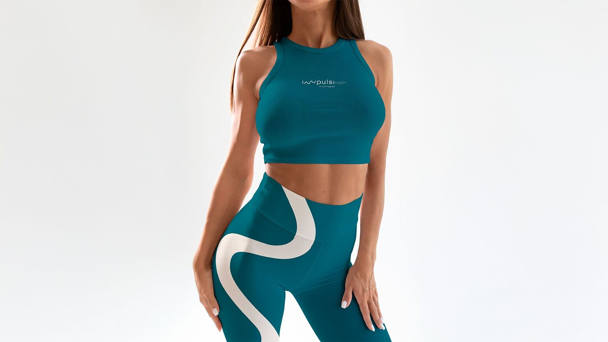
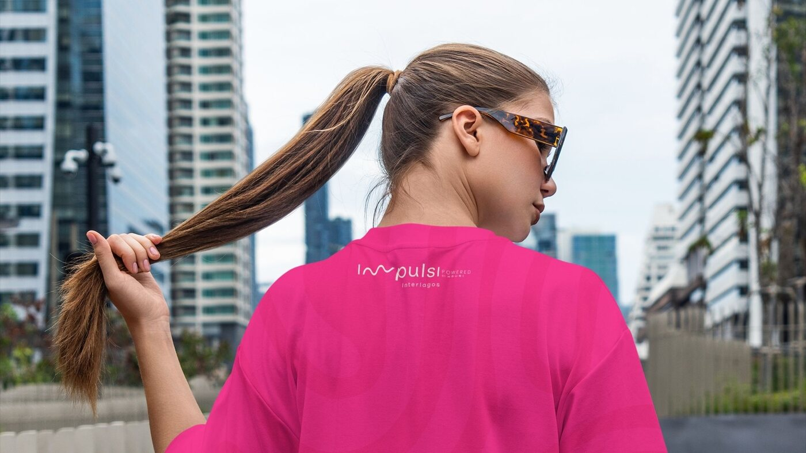
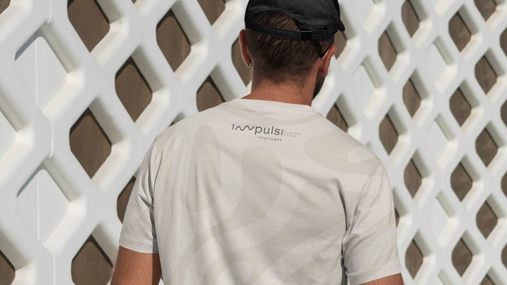
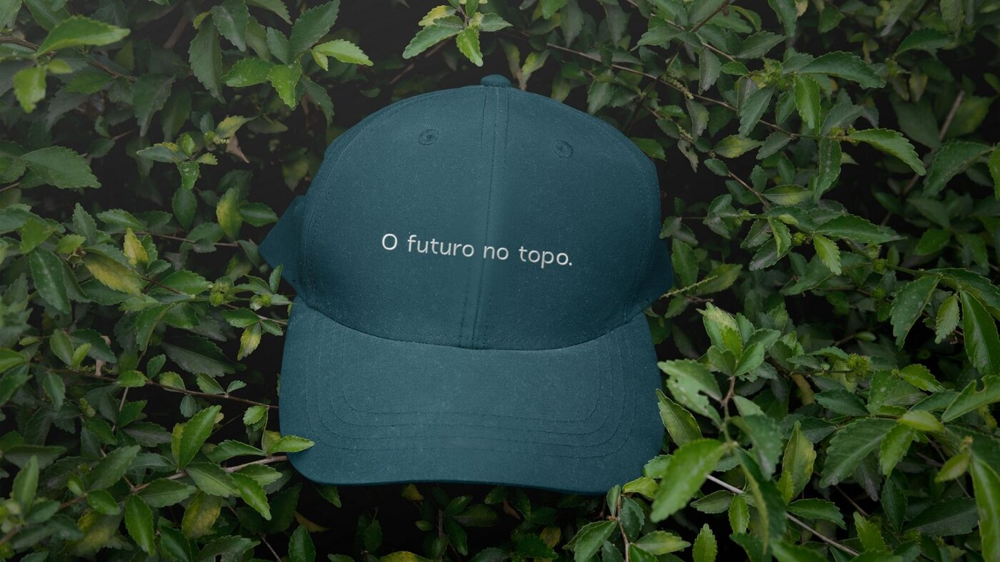
Etapas do projeto
Paleta da marca
Serviço
Quer uma marca que pulsa com o seu produto?
Fale com a Térri e construa uma identidade à altura da sua visão.
Começar um projeto